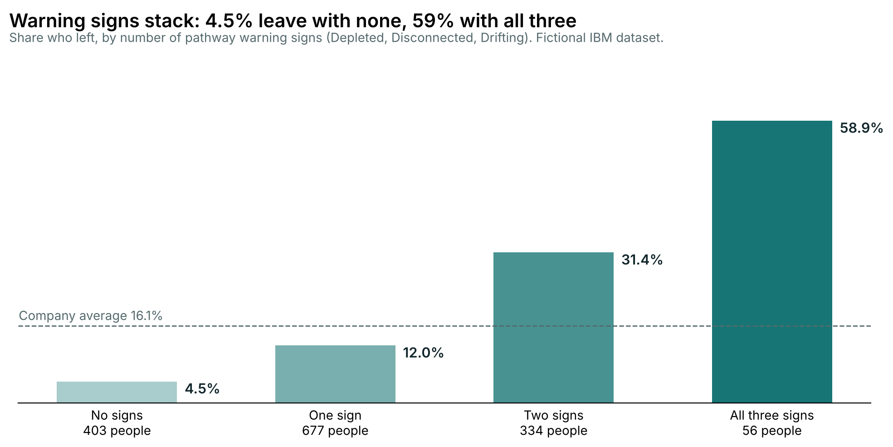
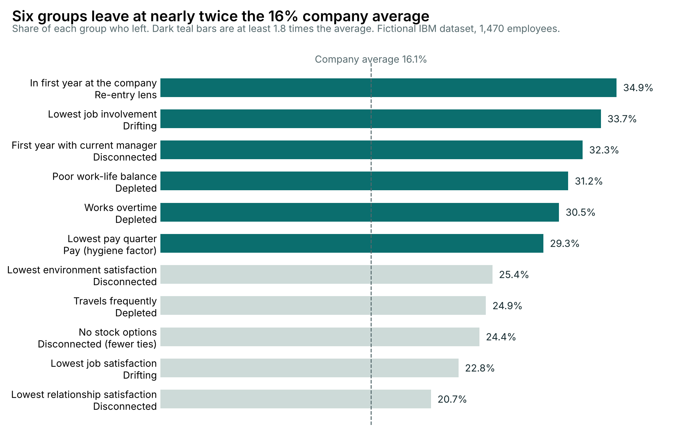

The problem
Year four. Sana has a good salary, a kind manager and a team she likes. Her last engagement survey was positive. But somewhere in the past year, every decision started needing three approvals and her ideas stopped going anywhere. Last week she quietly updated her CV.
Sana is a fictional composite, like every persona in the report.
Organizations have measured engagement for decades, yet it keeps falling. The scores show how many people are pulling back, but not why, so the response is usually a broad program of perks and pulse surveys that treats disengagement as one condition. The research says it is several.
of employees worldwide are engaged, the lowest level since 2020.
Gallup, State of the Global Workplace 2026 (2025 data)A toxic culture predicted attrition more than ten times as strongly as pay.
Sull, Sull & Zweig, MIT Sloan Management Review, 2022of knowledge workers trust their senior leaders to make the right decisions for their people.
HP Work Relationship Index 2025, cited in Deloitte 2026The Disengagement Pathways Framework
Drawing on more than 40 studies and reports, I separated five distinct routes to disengagement, each with its own causes, early signals and remedies, plus an overlay for the events that turn disengagement into resignation.

Demands outrun support
Overtime, exhaustion and cynicism. Grounded in the job demands-resources model and burnout research.
Growth stops
No next step, or nothing new to learn. Often the reliable performers organizations overlook.
A promise feels broken
Trust drops after a missed promotion or a reorganization. Grounded in psychological contract theory.
Ties wear thin
Isolation, or active exclusion. A new manager or remote distance can remove what holds people in place.
Work stops feeling like yours
Pay and team are fine, but autonomy and purpose are gone. The pathway engagement surveys miss most.
Testing it against data
I analysed the IBM HR Analytics Employee Attrition dataset (1,470 fictional employee records) in Python as a methodological proof of concept: a demonstration of how an organization could combine several warning signs into a risk score instead of relying on a single engagement score.


Two findings worth noting. The Stalled pathway is hidden in raw numbers but appears among long-tenured staff (14.2% vs 9.1% attrition when five or more years past promotion). And pay drives exits when it is clearly low, but matters far less once it is fair, exactly as Herzberg's "hygiene factor" idea predicts.
The data is fictional, so results illustrate the method rather than real-world rates. They show associations, not causes.
From diagnosis to action
The report turns the framework into tools a manager or HR partner could use on Monday.
| Tool | What it does |
|---|---|
| Three-layer diagnostic | Early-warning signals from existing HR data, a ten-item pulse survey that points to a pathway, and a manager conversation that confirms it |
| Intervention playbook | Remedies matched to each pathway, with a clear owner and a measure of success |
| Re-entry plan | A first-90-days plan for employees returning from parental leave, sabbaticals or illness, one of the most predictable risk moments in a career |
| 12-month roadmap | Diagnose, pilot, scale and embed, with gates between phases, a RACI and program KPIs |
Myths the evidence busts
- "A pay raise will fix it." Pay prevents dissatisfaction but doesn't create motivation, unless it is genuinely below fair.
- "People leave because they're unhappy." Many leave after a shock, such as a reorganization or an outside offer.
- "No burnout means engaged." Burnout and engagement run on separate tracks.
- "Plateauing is an age thing." It hurts at any career stage, because it breaks expectations.
- "Managers can't do much about it." Supervision, support and fairness shift turnover.
My approach
I come to this from healthcare operations and project management (BDS, MHA, PMP), with more than eight years in consulting and startups. The project combines three lenses: a clinician's habit of diagnosing before treating, a project manager's discipline of turning analysis into a phased plan with owners and measures, and a long-standing interest in the psychology of work.
Read the full report
The 20-page report covers the research, the five pathways with personas, the full data analysis, the diagnostic toolkit, the intervention playbook, the re-entry spotlight, the roadmap and its limitations.